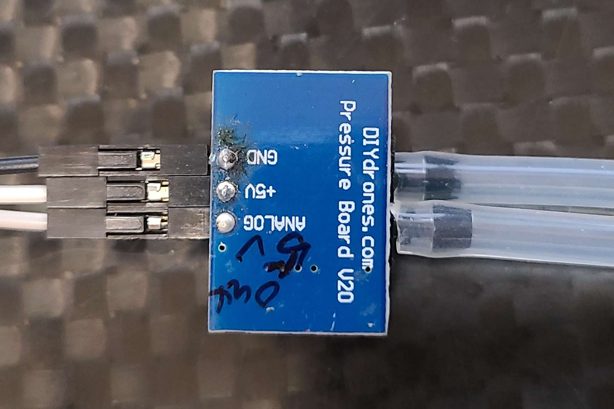
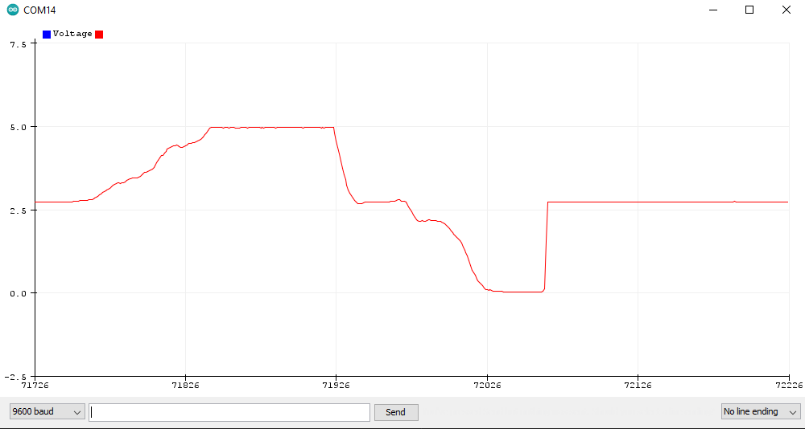
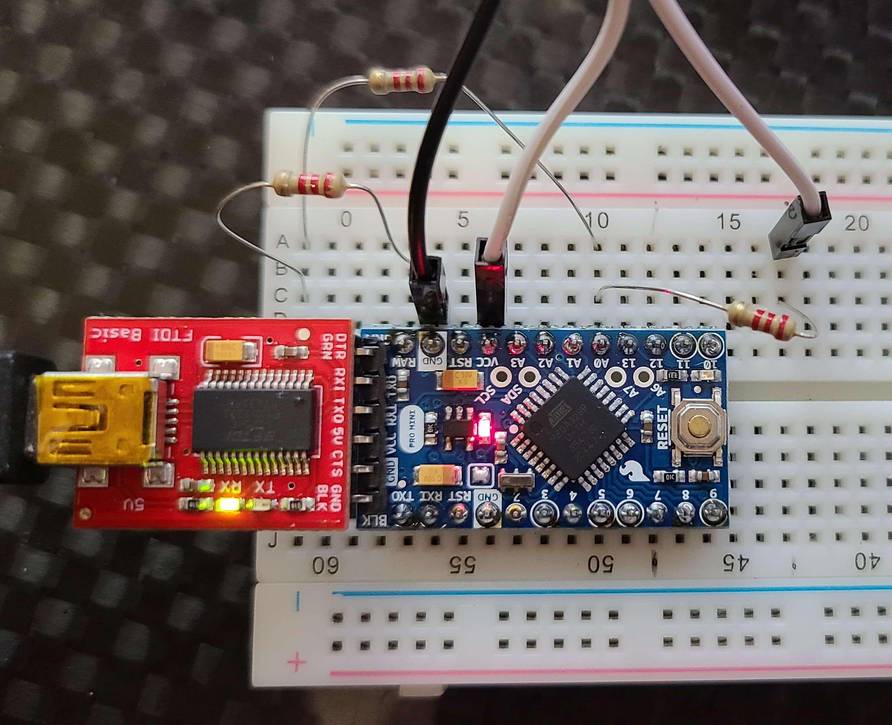

Measure PWM Signals for under 5 USD with a Pi Pico Oscillicope
If you've ever wondered how your RC car or airplane servos know where to move, then hopefully this will shed some light on the subject. I find electronics concepts are like magic, and when I finally understand them, they feel less like magic and more like superpowers! Unfortunaltey for mechanically minded people (myself included), electronics can be challenging to design and build, and even more challenging to troubleshoot. "If I could only see what is happening inside the wire" you might have found yourself saying. Well, the first step you should take is learn how to use a multimeter. This tool is essential for every electronics tinkerer for measuring voltage, current, and some can measure capcitance, temperature, etc, etc. However, this only gets you so far, as the sample rate of a multimeter is not fast enough to "see" common signals such as PWM-Pulse Width Modulation, PPM, SBUS, etc. You need an oscilliscope. A couple searches and you will realize that they are really expensive. I ended up buy and really cheap one on Amazon just to see if actually worked, and it does. It is probably limited to not very useful for the practicing electrical engineer, but for me to measure PWM servo signals, it worked. Quimat 2.4" TFT Digital. If you expect to do more than just simple pwm measurment, I would save your money and buy a nicer one, OR build your own for a few dollars.
Another goal of this project was to measure the voltage level of the RC receiver. Most modern electronics use 5v or 3.3v for serial communications or pwm signals. It's important to know what your hardware is generating or needs, and if it can only handle 3.3v, a 5v signal will damage it, soo it's best to check it.
Hardware and Software
Assuming you have an android device, here is the equipment you'll need to buy
$4 - https://www.raspberrypi.com/products/raspberry-pi-pico/
$1.5 - https://play.google.com/store/apps/details?id=xyz.fhdm.scoppy
The software and instructions are here on github
using the app wiki
The Math
Classic Analog servos operate on a 50Hz frequency. I am not sure why but thats what it is. this works out to
50Hz = 50 cycles per second, or 1/50 = 0.02 seconds per cycle = 20 millisecond peroid
in order to convey information through an analog signal it is done by the length of time the voltage is "on", or "high", and the servo can read that and convert it to a position. An example is when the signal is high for 1.5ms, the servo interprets that as middle.
In summary, we have the following properties of out square wave PWM signal
Duty Cycle = 1-2ms = 1000-2000us Peroid = 20 ms Frequency/Frame Rate = 1/20ms = 50 Hz
If you have a true RMS multimeter (I recommend the Artech A5030 ), you can measure the logic voltage if you know the duty cycle of the signal. The A5030 also can measure frequency and duty cycle, so you really dont need an oscillicope for a lot of basic signal analysis.
the math is
logic voltage * duty cycle = measured voltage
for example
3.3v * 1ms/20ms = 0.165v or 3.3v * 2ms/20ms = 0.33v
The board looks like this
the setup to read the A0 voltage is like so

and the arduino code
and using this code we get the raw values up to 5v, which the arduino is OK with but most hobby-grade flight controllers ADC ports are 3.3v and it will likely damage it.
Voltage Divider Design
To design our voltage divider, I referenced this amazing electronics resource,
https://ultimateelectronicsbook.com
sparkfun also has a built-in calculator for checking your numbers and some good background.
https://learn.sparkfun.com/tutorials/voltage-dividers/all
I used python for the calculation of the resistor values to use to get a voltage drop from 5v to 3.3v
or try your own resistor values to get the desired voltage drop.
So it looks like we need n=3 2.2kOhm resistors to get a drop from 5v to 3.3v. We ultimatley want a 2:1 ratio of resistors, so any values with that ratio should work. And just for fun, because it's easy, I checked my math out with the circuitlab simulation, and everything looks good. Note I used 100 and 200 Ohms but as long as we maintain a 2:1 we will get the same voltage reduction.
Circuitlab , or https://www.circuitlab.com/editor/#?id=56c4dkqd8xyq is awesome and easy

Wiring the Voltage Divider
I first tested the circuit like so
and looking at the analog readings, it is giving me the voltages I expect, which is max=3.3v and min is 0 when you pull vacuum, with a nominal voltage of 1.7v at ambient pressure so it looks like the design is working as expected.

Everything Looks good, so I soldered together the resistors like so, installed some JR 2.54mm pin connectors, and we are ready to fly!

and the final designs for the arduino or to use with the Matek F405-SE controller are here!


A few observations are with this 2:1 voltage divider, the nominal no airspeed voltage is 1.7, and at max pressure, the max voltage is 3.06 , and the min voltage when I pull min negative pressure is zero. So, it is not exactly max of 3.3v, but thats OK. The main goal here is to not damage the ADC on the flight controller.
Thanks for reading, happy flying, and Stay Curious!
Comments
Comments powered by Disqus